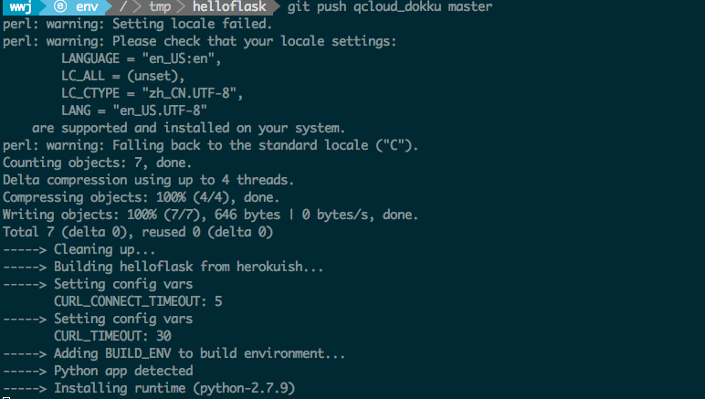
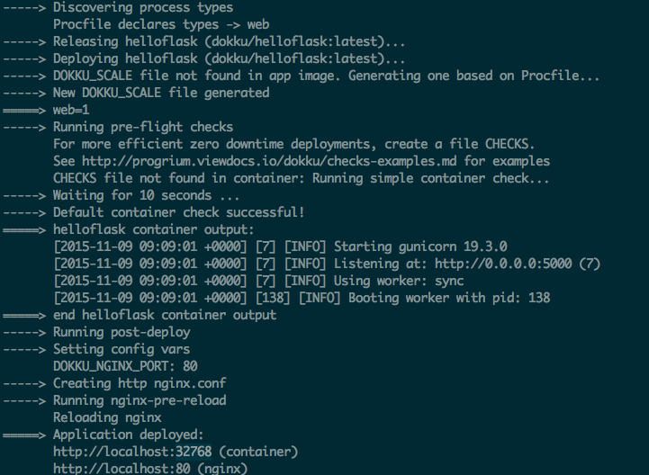
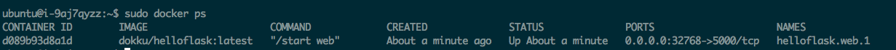
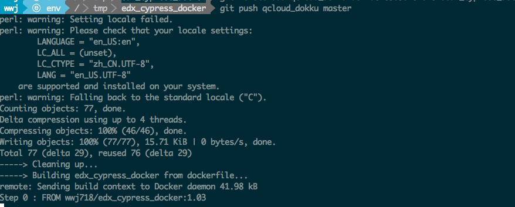

当某个系统能够正常运转时，不要打扰它；要以它为基础来构建。在自然体系中，改良就是在现存的调试好的系统上「打补丁」，原先的层级继续运作，甚至不会注意到其上还有新的层级 --《失控》
我喜欢将《失控》中的这段看作对增量式开发的隐喻
这也是我顶喜欢的几种构建方式之一
前段时间在想，如果我们想提供Open edX的云服务(SaaS)，那么如何入手呢
场景
用户打开一个网页，就像在阿里云购买一台主机一样，选择主题，绑定域名，上传logo，填写网站名称...，然后点击提交，就生成了一个他自己的Open edX网站
联想
《失控》中的这段引导我将既有基础视为下层，在不扰乱它的情况下，构建新的层级，用户定制相关的逻辑构建在这一层，而下层对此一无所知。
想到这一点时，我大为振奋。剩下的工作就是看看我们有哪些现有基础，然后寻找拼图中缺失的版块
这是一种尝试、过家家式的解决方案，当对阐明原理是足够的，同时它也可以用于开发环境中，好比你完全可以把它融入公司内部的开发工作流里。对提升效率是有帮助的.我们最终至少能得到一种类似Heroku的私有云！
现有基础
我们目前都有哪些基础呢，我个人公司内部的技术基础，不方便透露。我们可以来看看edx国内社区都有哪些既有的基础。
首先振奋人心的是，docker版本在实验环境中已经基本可用了，生产版本在我的实验环境中也展示出了可商用的趋势(功能都完备了)，但考虑到edx官方之后会来推进这块，不想跟官方撞车，这块暂时不推进
同时，社区已经积累了足够的edx定制的经验，通过脚本可以对edx中的各个定制化要素予以定制，诸如主题和汉化甚至djangoapp和xblock都实现了脚本化。
思路
在设计层面，我们将用户的定制视为信息收集业务，可以单独跑一个django app.收集到的信息，存入数据库，在构建脚本中获取到他们（实际是个传参的过程，数据注入），据此构建出定制化的Open edX示例
缺失的版块
那么我们还缺什么呢，缺的是一个开源的管理docker的工具，好在我们有github呀
到github上一搜，发现了
appsembler公司的Open edX云平台使用的好像是shipyard来管理docker，我最终决定采用dokku，原因就不细说了，其中一点是它提供Heroku一样的操作方式，而Heroku是极佳的PaaS，许多的现成应用都可以直接部署到其上，十分合适用于构建公司内部的PaaS。用于自动化测试或是其他
Dokku是啥
Docker powered mini-Heroku in around 100 lines of Bash
Dokku是一个小型的PaaS平台，支持Python、Ruby、Node.js、Java、PHP、Clojure、Go。数据库之类的也都有插件，便利之际
有了Dokku，我们可以使用简易的方式部署小型应用，将代码git push到对应的仓库就自动触发部署，当然也支持push Dockerfile的方式。我们最后采用的是后一种方式
安装
在Ubuntu14.04 x64上
wget https://raw.githubusercontent.com/progrium/dokku/v0.4.3/bootstrap.sh
sudo DOKKU_TAG=v0.4.3 bash bootstrap.sh
安装结束后。我们还要做以下工作:
- 绑定域名（可选），如果不绑定的话，将以自动分配端口的形式访问
- 上传受信任机器的ssh-key到dokku服务器上.dokku使用git来完成应用的部署，我们需要将我们的公钥上传到dokku上，使dokku能验证我们的身份。
cd /home/dokku
mv /home/dokku/VHOST /home/dokku/VHOST~
echo "localhost" > /home/dokku/HOSTNAME
sudo visudo #在最后写入
ubuntu ALL=NOPASSWD: ALL
cat ~/.ssh/id_rsa.pub | ssh ubuntu@server_ip "sudo sshcommand acl-add dokku wwj"
构建一般应用
git clone https://github.com/wwj718/helloflask.git
git remote add qcloud_dokku dokku@127.0.0.1:helloflask
git push qcloud_dokku master
开始构建 
正在构建 
构建完成 
构建edx_cypress_docker
一键式
git clone https://github.com/wwj718/edx_cypress_docker.git
git remote add qcloud_dokku dokku@127.0.0.1:edx_cypress_docker
git push qcloud_dokku master

至此整个拼图已经基本完整了
Enjoying it
补遗
dokku-alt: dokku 的 fork 版本，它利用覆盖最稳定的使用案例及测试良好的插件来提供完整的解决文案